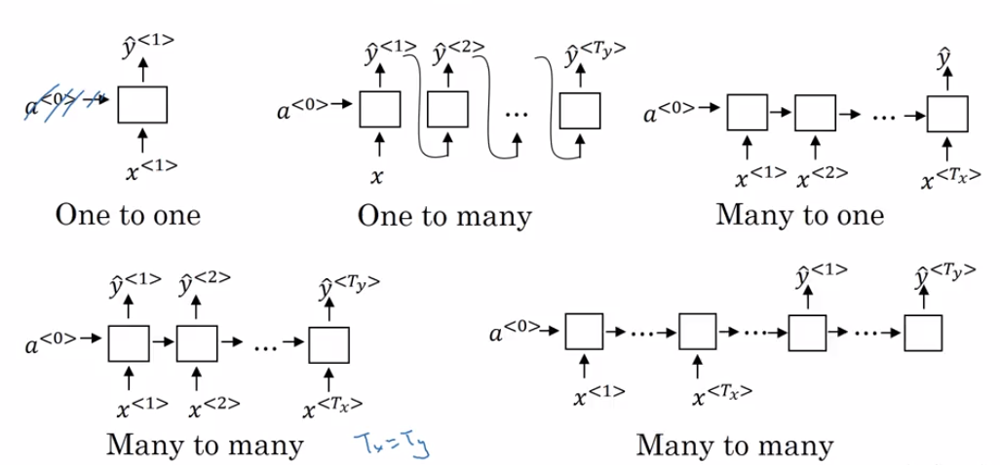
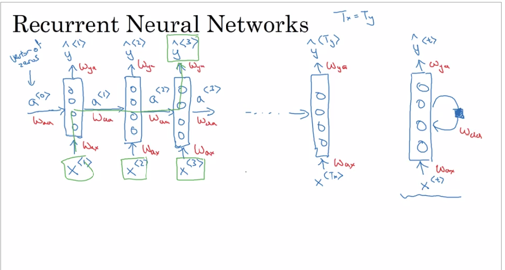
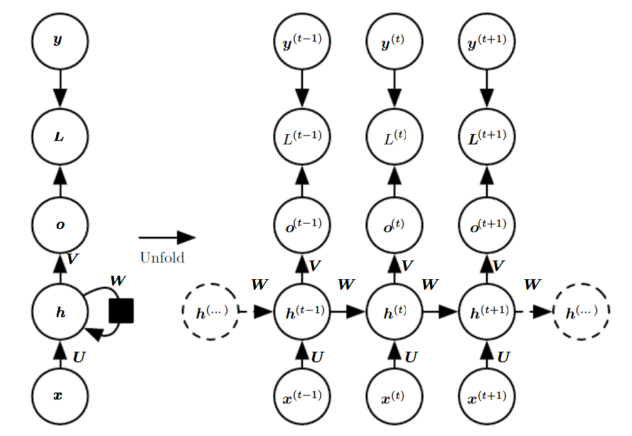
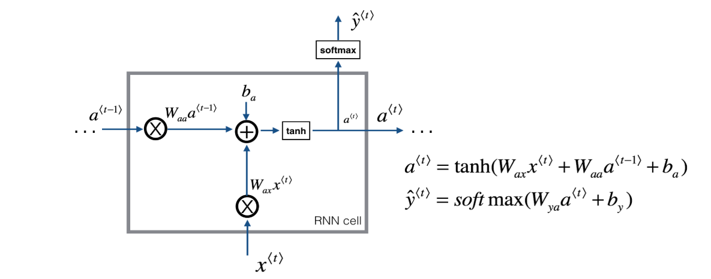
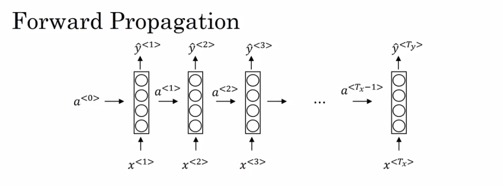
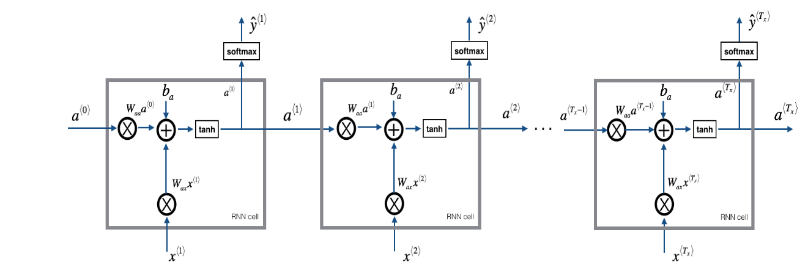
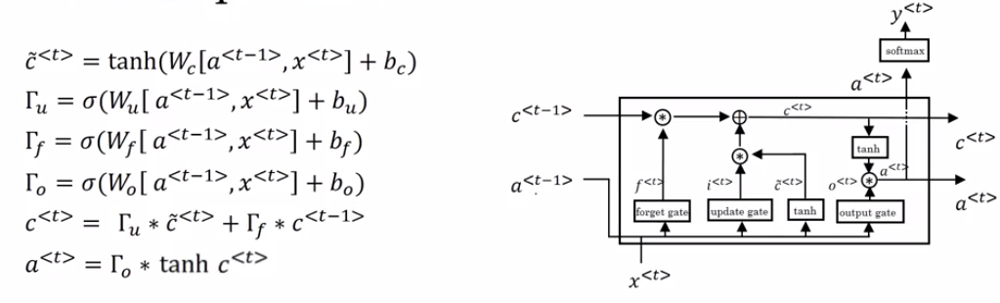
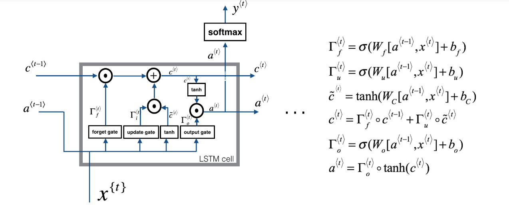
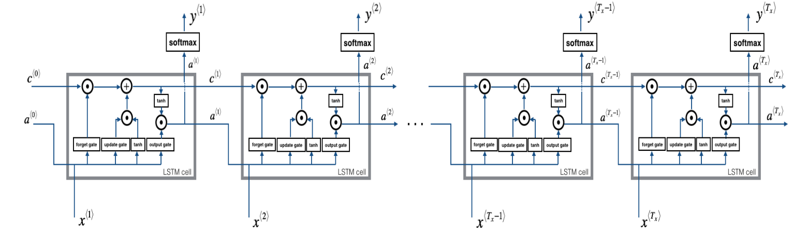
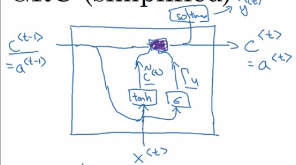

Code
def softmax(x):
e_x = np.exp(x - np.max(x))
return e_x / e_x.sum(axis=0)
def sigmoid(x):
return 1 / (1 + np.exp(-x))def softmax(x):
e_x = np.exp(x - np.max(x))
return e_x / e_x.sum(axis=0)
def sigmoid(x):
return 1 / (1 + np.exp(-x))We don’t use Normal MLP to handle textual data because they

Recurrent Neural Networks (RNN) are very effective for Natural Language Processing and other sequence tasks because they have “memory”. They can read inputs \(x^{\langle t \rangle}\) (such as words) one at a time, and remember some information/context through the hidden layer activations that get passed from one time-step to the next. This allows a uni-directional RNN to take information from the past to process later inputs.


import numpy as np
# GRADED FUNCTION: rnn_cell_forward
def rnn_cell_forward(xt, a_prev, parameters):
"""
Implements a single forward step of the RNN-cell as described in Figure (2)
Arguments:
xt -- your input data at timestep "t", numpy array of shape (n_x, m).
a_prev -- Hidden state at timestep "t-1", numpy array of shape (n_a, m)
parameters -- python dictionary containing:
Wax -- Weight matrix multiplying the input, numpy array of shape (n_a, n_x)
Waa -- Weight matrix multiplying the hidden state, numpy array of shape (n_a, n_a)
Wya -- Weight matrix relating the hidden-state to the output, numpy array of shape (n_y, n_a)
ba -- Bias, numpy array of shape (n_a, 1)
by -- Bias relating the hidden-state to the output, numpy array of shape (n_y, 1)
Returns:
a_next -- next hidden state, of shape (n_a, m)
yt_pred -- prediction at timestep "t", numpy array of shape (n_y, m)
cache -- tuple of values needed for the backward pass, contains (a_next, a_prev, xt, parameters)
"""
# Retrieve parameters from "parameters"
Wax = parameters["Wax"]
Waa = parameters["Waa"]
Wya = parameters["Wya"]
ba = parameters["ba"]
by = parameters["by"]
### START CODE HERE ### (≈2 lines)
# compute next activation state using the formula given above
a_next = np.tanh(np.dot(Wax,xt)+np.dot(Waa,a_prev)+ba)
# compute output of the current cell using the formula given above
yt_pred = softmax(np.dot(Wya,a_prev)+by)
### END CODE HERE ###
# store values you need for backward propagation in cache
cache = (a_next, a_prev, xt, parameters)
return a_next, yt_pred, cache
np.random.seed(1)
xt = np.random.randn(10,3)
print("Input at time step t [Vocab size[Input Vector Size] = {}, Number of examples = {}]".format(xt.shape[0],xt.shape[1]))
a_prev = np.random.randn(5,3) #[Hidden State neurons , No of Examples]
Waa = np.random.randn(5,5) #[Previous ,Current]
Wax = np.random.randn(5,10) #[Number of Hidden Layers,Inputer Vector Size]
Wya = np.random.randn(10,5) #[No of outputs , Hidden State]
ba = np.random.randn(5,1) #[Number of Hidden Layers]
by = np.random.randn(10,1) #[Number of output neurons]
parameters = {"Waa": Waa, "Wax": Wax, "Wya": Wya, "ba": ba, "by": by}
a_next, yt_pred, cache = rnn_cell_forward(xt, a_prev, parameters)
print("a_next[4] = ", a_next[4])
print("a_next.shape = ", a_next.shape)
print("yt_pred[1] =", yt_pred[:,1])
print("yt_pred[2] =", yt_pred[:,2])
print("Sum over prediction for yt_pred[1]",sum(yt_pred[:,1]))
print("yt_pred.shape = ", yt_pred.shape)Input at time step t [Vocab size[Input Vector Size] = 10, Number of examples = 3]
a_next[4] = [-0.58139971 -0.99999116 0.99815099]
a_next.shape = (5, 3)
yt_pred[1] = [1.09976966e-03 9.30899441e-02 6.35819631e-02 2.57749868e-02
4.43886409e-02 1.80070037e-02 2.86166616e-01 5.57862094e-03
4.62031135e-01 2.81319496e-04]
yt_pred[2] = [0.0416935 0.32602933 0.00274785 0.00857954 0.07144196 0.02316702
0.05565261 0.05245049 0.41108951 0.00714818]
Sum over prediction for yt_pred[1] 0.9999999999999999
yt_pred.shape = (10, 3)You can see an RNN as the repetition of the cell you’ve just built. If your input sequence of data is carried over 10 time steps, then you will copy the RNN cell 10 times. Each cell takes as input the hidden state from the previous cell (\(a^{\langle t-1 \rangle}\)) and the current time-step’s input data (\(x^{\langle t \rangle}\)). It outputs a hidden state (\(a^{\langle t \rangle}\)) and a prediction (\(y^{\langle t \rangle}\)) for this time-step.


What we will try to do: 1. Create a vector of zeros (\(a\)) that will store all the hidden states computed by the RNN. 2. Initialize the “next” hidden state as \(a_0\) (initial hidden state). 3. Start looping over each time step, your incremental index is \(t\) : - Update the “next” hidden state and the cache by running rnn_cell_forward - Store the “next” hidden state in \(a\) (\(t^{th}\) position) - Store the prediction in y - Add the cache to the list of caches 4. Return \(a\), \(y\) and caches
def rnn_forward(x, a0, parameters):
"""
Implement the forward propagation of the recurrent neural network described in Figure (3).
Arguments:
x -- Input data for every time-step, of shape (n_x, m, T_x).
a0 -- Initial hidden state, of shape (n_a, m)
parameters -- python dictionary containing:
Waa -- Weight matrix multiplying the hidden state, numpy array of shape (n_a, n_a)
Wax -- Weight matrix multiplying the input, numpy array of shape (n_a, n_x)
Wya -- Weight matrix relating the hidden-state to the output, numpy array of shape (n_y, n_a)
ba -- Bias numpy array of shape (n_a, 1)
by -- Bias relating the hidden-state to the output, numpy array of shape (n_y, 1)
Returns:
a -- Hidden states for every time-step, numpy array of shape (n_a, m, T_x)
y_pred -- Predictions for every time-step, numpy array of shape (n_y, m, T_x)
caches -- tuple of values needed for the backward pass, contains (list of caches, x)
"""
# Initialize "caches" which will contain the list of all caches
caches = []
# Retrieve dimensions from shapes of x and parameters["Wya"]
n_x, m, T_x = x.shape
n_y, n_a = parameters["Wya"].shape
### START CODE HERE ###
# initialize "a" and "y" with zeros (≈2 lines)
a = np.zeros(shape=(n_a,m,T_x))
y_pred = np.zeros(shape=(n_y,m,T_x))
# Initialize a_next (≈1 line)
a_next = a0
# loop over all time-steps
for t in range(T_x):
# Update next hidden state, compute the prediction, get the cache (≈1 line)
a_next, yt_pred, cache = rnn_cell_forward(x[:,:,t],a_next,parameters)
# Save the value of the new "next" hidden state in a (≈1 line)
a[:,:,t] = a_next
# Save the value of the prediction in y (≈1 line)
y_pred[:,:,t] = yt_pred
# Append "cache" to "caches" (≈1 line)
caches.append(cache)
### END CODE HERE ###
# store values needed for backward propagation in cache
caches = (caches, x)
return a, y_pred, cachesnp.random.seed(1)
x = np.random.randn(10,3,4)
a0 = np.random.randn(5,3)
Waa = np.random.randn(5,5)
Wax = np.random.randn(5,10)
Wya = np.random.randn(10,5)
ba = np.random.randn(5,1)
by = np.random.randn(10,1)
parameters = {"Waa": Waa, "Wax": Wax, "Wya": Wya, "ba": ba, "by": by}
a, y_pred, caches = rnn_forward(x, a0, parameters)
print("a[4][1] = ", a[4][1])
print("a.shape = ", a.shape)
print("y_pred[1] =", y_pred[1])
print("y_pred.shape = ", y_pred.shape)
print("caches[1][1] =", caches[1][1])
print("len(caches) = ", len(caches))a[4][1] = [ 0.98028748 -0.99999906 -0.9988861 -0.97705431]
a.shape = (5, 3, 4)
y_pred[1] = [[0.01239777 0.05413115 0.00182671 0.00035798]
[0.0010342 0.00521164 0.03933742 0.00097552]
[0.13199273 0.00056664 0.00615254 0.02599894]]
y_pred.shape = (10, 3, 4)
caches[1][1] = [[-0.3224172 -0.38405435 1.13376944 -1.09989127]
[-0.17242821 -0.87785842 0.04221375 0.58281521]
[-1.10061918 1.14472371 0.90159072 0.50249434]]
len(caches) = 2
\[ \frac{\partial E_3}{\partial W_y} = \frac{\partial E_3}{\partial \bar y_3}. \frac{\partial \bar y_3}{\partial W_y} \\\frac{\partial E_2}{\partial W_y} = \frac{\partial E_2}{\partial \bar y_2}. \frac{\partial \bar y_2}{\partial W_y} \\\frac{\partial E_1}{\partial W_y} = \frac{\partial E_1}{\partial \bar y_1}. \frac{\partial \bar y_1}{\partial W_y}\\ \]
General Equation \[ \frac{\partial E_N}{\partial W_y} = \frac{\partial E_N}{\partial \bar y_N}. \frac{\partial \bar y_N}{\partial W_y} \]
At time step t=3 the gradient contribution for \[ {\bar s_3}\] is
\[ \frac{\partial E_3}{\partial W_x} = \frac{\partial E_3}{\partial \bar y_3}. \frac{\partial \bar y_3}{\partial \bar s_3} . \frac{\partial \bar s_3}{\partial \bar W_s} \] At time step t=2 the gradient contribution for \[ \bar s_2 \] is \[ \frac{\partial E_3}{\partial W_s} = \frac{\partial E_3}{\partial \bar y_3}. \frac{\partial \bar y_3}{\partial \bar s_3} . \frac{\partial \bar s_3}{\partial \bar s_2} .\frac{\partial \bar s_2}{\partial \bar W_s} \] At time step t=1 the gradient contribution for \[ \bar s_1\] is \[ \frac{\partial E_3}{\partial W_s} = \frac{\partial E_3}{\partial \bar y_3}. \frac{\partial \bar y_3}{\partial \bar s_3} . \frac{\partial \bar s_3}{\partial \bar s_2} . \frac{\partial \bar s_2}{\partial \bar s_1} . \frac{\partial \bar s_1}{\partial \bar W_s} \] After considering the contributions from all three states: \[\bar{s_3}\] ,\[\bar{s_2}\] and \[\bar{s_1}\], we will accumulate them to find the final gradient calculation.
The following equation is the gradient contributing to the adjustment of \[W_s\] using Backpropagation Through Time: \[ \frac{\partial E_3}{\partial W_s} = \frac{\partial E_3}{\partial \bar y_3}. \frac{\partial \bar y_3}{\partial \bar s_3} . \frac{\partial \bar s_3}{\partial \bar W_s} + \\ \frac{\partial E_3}{\partial \bar y_3}. \frac{\partial \bar y_3}{\partial \bar s_3} . \frac{\partial \bar s_3}{\partial \bar s_2} .\frac{\partial \bar s_2}{\partial \bar W_s}+ \\ \frac{\partial E_3}{\partial \bar y_3}. \frac{\partial \bar y_3}{\partial \bar s_3} . \frac{\partial \bar s_3}{\partial \bar s_2} . \frac{\partial \bar s_2}{\partial \bar s_1} . \frac{\partial \bar s_1}{\partial \bar W_s} \] The General Equation is \[ \frac{\partial E_N}{\partial W_s} = \sum_{i=1}^N\frac{\partial E_N}{\partial \bar y_N}. \frac{\partial \bar y_N}{\partial \bar s_i} . \frac{\partial \bar s_i}{\partial \bar W_s} \]
At time step t=3 the gradient contribution for \[ \bar s_3\] is \[ \frac{\partial E_3}{\partial W_x} = \frac{\partial E_3}{\partial \bar y_3}. \frac{\partial \bar y_3}{\partial \bar s_3} . \frac{\partial \bar s_3}{\partial W_x} \] At time step t=2 the gradient contribution for \[ \bar s_2\] is \[ \frac{\partial E_3}{\partial W_x} = \frac{\partial E_3}{\partial \bar y_3}. \frac{\partial \bar y_3}{\partial \bar s_3} . \frac{\partial \bar s_3}{\partial \bar s_2} .\frac{\partial \bar s_2}{\partial W_x} \] At time step t=1 the gradient contribution for \[ \bar s_1\] is \[ \frac{\partial E_3}{\partial W_x} = \frac{\partial E_3}{\partial \bar y_3}. \frac{\partial \bar y_3}{\partial \bar s_3} . \frac{\partial \bar s_3}{\partial \bar s_2} . \frac{\partial \bar s_2}{\partial \bar s_1} . \frac{\partial \bar s_1}{\partial W_x} \] After considering the contributions from all three states: \[\bar{s_3}\] ,\[\bar{s_2}\] and \[\bar{s_1}\], we will accumulate them to find the final gradient calculation.
The following equation is the gradient contributing to the adjustment of \[W_s\] using Backpropagation Through Time: \[ \frac{\partial E_3}{\partial W_x} = \frac{\partial E_3}{\partial \bar y_3}. \frac{\partial \bar y_3}{\partial \bar s_3} . \frac{\partial \bar s_3}{\partial W_x}+ \\ \frac{\partial E_3}{\partial \bar y_3}. \frac{\partial \bar y_3}{\partial \bar s_3} . \frac{\partial \bar s_3}{\partial \bar s_2} .\frac{\partial \bar s_2}{\partial W_x} + \\ \frac{\partial E_3}{\partial \bar y_3}. \frac{\partial \bar y_3}{\partial \bar s_3} . \frac{\partial \bar s_3}{\partial \bar s_2} . \frac{\partial \bar s_2}{\partial \bar s_1} . \frac{\partial \bar s_1}{\partial W_x} \] The General Equation is \[ \frac{\partial E_N}{\partial W_x} = \sum_{i=1}^N\frac{\partial E_N}{\partial \bar y_N}. \frac{\partial \bar y_N}{\partial \bar s_i} . \frac{\partial \bar s_i}{\partial \bar W_x} \] RNNs have a short memory and suffers from vanishing gradient problem.
In BPTT, computing the gradient with respect to hidden state involves many factors of Whh, which might result in either of the following: 1. Exploding gradient (when gradient values > 1
Solution
1. Clipping the gradient values between a certain range 2. Vanishing gradient(when gradient values <1)
Solution
1. Better Activation Function 2. Better Weight initialization 3. Better Network Architecture

For the sake of this illustration, lets assume we are reading words in a piece of text, and want use an LSTM to keep track of grammatical structures, such as whether the subject is singular or plural. If the subject changes from a singular word to a plural word, we need to find a way to get rid of our previously stored memory value of the singular/plural state. In an LSTM, the forget gate lets us do this:
\[\Gamma_f^{\langle t \rangle} = \sigma(W_f[a^{\langle t-1 \rangle}, x^{\langle t \rangle}] + b_f)\tag{1} \]
Here, \(W_f\) are weights that govern the forget gate’s behavior. We concatenate \([a^{\langle t-1 \rangle}, x^{\langle t \rangle}]\) and multiply by \(W_f\). The equation above results in a vector \(\Gamma_f^{\langle t \rangle}\) with values between 0 and 1. This forget gate vector will be multiplied element-wise by the previous cell state \(c^{\langle t-1 \rangle}\). So if one of the values of \(\Gamma_f^{\langle t \rangle}\) is 0 (or close to 0) then it means that the LSTM should remove that piece of information (e.g. the singular subject) in the corresponding component of \(c^{\langle t-1 \rangle}\). If one of the values is 1, then it will keep the information.
Once we forget that the subject being discussed is singular, we need to find a way to update it to reflect that the new subject is now plural. Here is the formulat for the update gate:
\[\Gamma_u^{\langle t \rangle} = \sigma(W_u[a^{\langle t-1 \rangle}, x^{\{t\}}] + b_u)\tag{2} \]
Similar to the forget gate, here \(\Gamma_u^{\langle t \rangle}\) is again a vector of values between 0 and 1. This will be multiplied element-wise with \(\tilde{c}^{\langle t \rangle}\), in order to compute \(c^{\langle t \rangle}\).
To update the new subject we need to create a new vector of numbers that we can add to our previous cell state. The equation we use is:
\[ \tilde{c}^{\langle t \rangle} = \tanh(W_c[a^{\langle t-1 \rangle}, x^{\langle t \rangle}] + b_c)\tag{3} \]
Finally, the new cell state is:
\[ c^{\langle t \rangle} = \Gamma_f^{\langle t \rangle}* c^{\langle t-1 \rangle} + \Gamma_u^{\langle t \rangle} *\tilde{c}^{\langle t \rangle} \tag{4} \]
To decide which outputs we will use, we will use the following two formulas:
\[ \Gamma_o^{\langle t \rangle}= \sigma(W_o[a^{\langle t-1 \rangle}, x^{\langle t \rangle}] + b_o)\tag{5}\] \[ a^{\langle t \rangle} = \Gamma_o^{\langle t \rangle}* \tanh(c^{\langle t \rangle})\tag{6} \]
Where in equation 5 you decide what to output using a sigmoid function and in equation 6 you multiply that by the \(\tanh\) of the previous state.
To summarize : 1. Forget gate : Need to forget irrelevant parts of the previous state 2. Update Gate: Process current input and previous state to update cell state(c(t-1) to c(t)) 3. Updating the cell: Store relevant new information to cell state 4. Output gate : To output certain parts of cell state

What we will do: 1. Concatenate \(a^{\langle t-1 \rangle}\) and \(x^{\langle t \rangle}\) in a single matrix: \(concat = \begin{bmatrix} a^{\langle t-1 \rangle} \\ x^{\langle t \rangle} \end{bmatrix}\) 2. Compute all the formulas 1-6. You can use sigmoid() (provided) and np.tanh(). 3. Compute the prediction \(y^{\langle t \rangle}\). You can use softmax() (provided).
Ct’ =tanh( Wc [ a t-1 , X t ] + bc )
\(\Gamma (u)\) = \(\sigma\)(Wu [at-1 , Xt ] + b u
\(\Gamma (f)\) = \(\sigma\)(Wf [at-1 , Xt ] + b u
\(\Gamma (o)\) = \(\sigma\)(Wo [at-1 , Xt ] + b r
Ct = \(\Gamma\)u * Ct’ + ( 1-\(\Gamma\)f ) * Ct-1
at = \(\Gamma\)o * tanh Ct
# GRADED FUNCTION: lstm_cell_forward
def lstm_cell_forward(xt, a_prev, c_prev, parameters):
"""
Implement a single forward step of the LSTM-cell as described in Figure (4)
Arguments:
xt -- your input data at timestep "t", numpy array of shape (n_x, m).
a_prev -- Hidden state at timestep "t-1", numpy array of shape (n_a, m)
c_prev -- Memory state at timestep "t-1", numpy array of shape (n_a, m)
parameters -- python dictionary containing:
Wf -- Weight matrix of the forget gate, numpy array of shape (n_a, n_a + n_x)
bf -- Bias of the forget gate, numpy array of shape (n_a, 1)
Wi -- Weight matrix of the update gate, numpy array of shape (n_a, n_a + n_x)
bi -- Bias of the update gate, numpy array of shape (n_a, 1)
Wc -- Weight matrix of the first "tanh", numpy array of shape (n_a, n_a + n_x)
bc -- Bias of the first "tanh", numpy array of shape (n_a, 1)
Wo -- Weight matrix of the output gate, numpy array of shape (n_a, n_a + n_x)
bo -- Bias of the output gate, numpy array of shape (n_a, 1)
Wy -- Weight matrix relating the hidden-state to the output, numpy array of shape (n_y, n_a)
by -- Bias relating the hidden-state to the output, numpy array of shape (n_y, 1)
Returns:
a_next -- next hidden state, of shape (n_a, m)
c_next -- next memory state, of shape (n_a, m)
yt_pred -- prediction at timestep "t", numpy array of shape (n_y, m)
cache -- tuple of values needed for the backward pass, contains (a_next, c_next, a_prev, c_prev, xt, parameters)
Note: ft/it/ot stand for the forget/update/output gates, cct stands for the candidate value (c tilde),
c stands for the memory value
"""
# Retrieve parameters from "parameters"
Wf = parameters["Wf"]
bf = parameters["bf"]
Wi = parameters["Wi"]
bi = parameters["bi"]
Wc = parameters["Wc"]
bc = parameters["bc"]
Wo = parameters["Wo"]
bo = parameters["bo"]
Wy = parameters["Wy"]
by = parameters["by"]
# Retrieve dimensions from shapes of xt and Wy
n_x, m = xt.shape
n_y, n_a = Wy.shape
### START CODE HERE ###
# Concatenate a_prev and xt (≈3 lines)
concat =np.zeros((n_a+n_x,m))
concat[: n_a, :] =a_prev
concat[n_a :, :] = xt
# Compute values for ft, it, cct, c_next, ot, a_next using the formulas given figure (4) (≈6 lines)
ft = sigmoid(np.dot(Wf,concat)+bf)
it = sigmoid(np.dot(Wi,concat)+bi)
cct = np.tanh(np.dot(Wc,concat)+bc)
c_next = ft*c_prev+ it*cct
ot = sigmoid(np.dot(Wo,concat)+bo)
a_next =ot*np.tanh(c_next)
# Compute prediction of the LSTM cell (≈1 line)
yt_pred = softmax(np.dot(Wy,a_next)+by)
### END CODE HERE ###
# store values needed for backward propagation in cache
cache = (a_next, c_next, a_prev, c_prev, ft, it, cct, ot, xt, parameters)
return a_next, c_next, yt_pred, cachenp.random.seed(1)
xt = np.random.randn(10,3)
a_prev = np.random.randn(5,3)
c_prev = np.random.randn(5,3)
Wf = np.random.randn(5, 5+10)
bf = np.random.randn(5,1)
Wi = np.random.randn(5, 5+10)
bi = np.random.randn(5,1)
Wo = np.random.randn(5, 5+10)
bo = np.random.randn(5,1)
Wc = np.random.randn(5, 5+10)
bc = np.random.randn(5,1)
Wy = np.random.randn(10,5)
by = np.random.randn(10,1)
parameters = {"Wf": Wf, "Wi": Wi, "Wo": Wo, "Wc": Wc, "Wy": Wy, "bf": bf, "bi": bi, "bo": bo, "bc": bc, "by": by}
a_next, c_next, yt, cache = lstm_cell_forward(xt, a_prev, c_prev, parameters)
print("a_next[4] = ", a_next[4])
print("a_next.shape = ", c_next.shape)
print("c_next[2] = ", c_next[2])
print("c_next.shape = ", c_next.shape)
print("yt[1] =", yt[:,1])
print("yt.shape = ", yt.shape)
print("cache[1][3] =", cache[1][3])
print("len(cache) = ", len(cache))a_next[4] = [-0.10195999 0.00914244 -0.47674224]
a_next.shape = (5, 3)
c_next[2] = [-0.2761536 -1.10274727 0.47710894]
c_next.shape = (5, 3)
yt[1] = [0.34166892 0.11058645 0.14684232 0.00715921 0.05455281 0.02475153
0.02097779 0.02419735 0.1596464 0.10961722]
yt.shape = (10, 3)
cache[1][3] = [ 0.51704028 -0.60571164 0.02549849]
len(cache) = 10Now that we have implemented one step of an LSTM, we can now iterate this over this using a for-loop to process a sequence of \(T_x\) inputs. 
# GRADED FUNCTION: lstm_forward
def lstm_forward(x, a0, parameters):
"""
Implement the forward propagation of the recurrent neural network using an LSTM-cell described in Figure (3).
Arguments:
x -- Input data for every time-step, of shape (n_x, m, T_x).
a0 -- Initial hidden state, of shape (n_a, m)
parameters -- python dictionary containing:
Wf -- Weight matrix of the forget gate, numpy array of shape (n_a, n_a + n_x)
bf -- Bias of the forget gate, numpy array of shape (n_a, 1)
Wi -- Weight matrix of the update gate, numpy array of shape (n_a, n_a + n_x)
bi -- Bias of the update gate, numpy array of shape (n_a, 1)
Wc -- Weight matrix of the first "tanh", numpy array of shape (n_a, n_a + n_x)
bc -- Bias of the first "tanh", numpy array of shape (n_a, 1)
Wo -- Weight matrix of the output gate, numpy array of shape (n_a, n_a + n_x)
bo -- Bias of the output gate, numpy array of shape (n_a, 1)
Wy -- Weight matrix relating the hidden-state to the output, numpy array of shape (n_y, n_a)
by -- Bias relating the hidden-state to the output, numpy array of shape (n_y, 1)
Returns:
a -- Hidden states for every time-step, numpy array of shape (n_a, m, T_x)
y -- Predictions for every time-step, numpy array of shape (n_y, m, T_x)
caches -- tuple of values needed for the backward pass, contains (list of all the caches, x)
"""
# Initialize "caches", which will track the list of all the caches
caches = []
### START CODE HERE ###
# Retrieve dimensions from shapes of x and parameters['Wy'] (≈2 lines)
n_x, m, T_x =x.shape
n_y, n_a = parameters["Wy"].shape
# initialize "a", "c" and "y" with zeros (≈3 lines)
a = np.zeros(shape=(n_a,m,T_x))
c = np.zeros(shape=(n_a,m,T_x))
y = np.zeros(shape=(n_y,m,T_x))
# Initialize a_next and c_next (≈2 lines)
a_next = a0
c_next = np.zeros(shape=a_next.shape)
# loop over all time-steps
for t in range(T_x):
# Update next hidden state, next memory state, compute the prediction, get the cache (≈1 line)
a_next, c_next, yt, cache = lstm_cell_forward(x[:,:,t],a_next,c_next,parameters)
# Save the value of the new "next" hidden state in a (≈1 line)
a[:,:,t] = a_next
# Save the value of the prediction in y (≈1 line)
y[:,:,t] = yt
# Save the value of the next cell state (≈1 line)
c[:,:,t] = c_next
# Append the cache into caches (≈1 line)
caches.append(cache)
### END CODE HERE ###
# store values needed for backward propagation in cache
caches = (caches, x)
return a, y, c, cachesnp.random.seed(1)
x = np.random.randn(10,3,7)
a0 = np.random.randn(5,3)
Wf = np.random.randn(5, 5+10)
bf = np.random.randn(5,1)
Wi = np.random.randn(5, 5+10)
bi = np.random.randn(5,1)
Wo = np.random.randn(5, 5+10)
bo = np.random.randn(5,1)
Wc = np.random.randn(5, 5+10)
bc = np.random.randn(5,1)
Wy = np.random.randn(10,5)
by = np.random.randn(10,1)
parameters = {"Wf": Wf, "Wi": Wi, "Wo": Wo, "Wc": Wc, "Wy": Wy, "bf": bf, "bi": bi, "bo": bo, "bc": bc, "by": by}
a, y, c, caches = lstm_forward(x, a0, parameters)
print("a.shape = ", a.shape)
print("y[1] =", y[:,1,1])
print("y.shape = ", y.shape)
print("caches[1][1[1]] =", caches[1][1][1])
print("c[1][2][1]", c[1][2][1])
print("len(caches) = ", len(caches))a.shape = (5, 3, 7)
y[1] = [0.31913833 0.09499694 0.07833096 0.02950319 0.1547548 0.02714568
0.11487035 0.04371666 0.11982581 0.01771727]
y.shape = (10, 3, 7)
caches[1][1[1]] = [-0.26788808 0.53035547 -0.69166075 -0.39675353 -0.6871727 -0.84520564
-0.67124613]
c[1][2][1] 0.15137211713431287
len(caches) = 2On the properties of neural machine translation: Encoder Decoder Approaches
Empirical Evalaution of Gated Recurrent Neural Networks on Sequence Modeling
Ct = at
Ct’ =tanh( Wc [ C t-1 , X t ] + bc )
\(\Gamma (u)\) = \(\sigma\)(Wu [Ct-1 , Xt ] + b u
Ct = \(\Gamma\) * Ct’ + 1-\(\Gamma\) * Ct-1

Ct’ =tanh( Wc [ \(\Gamma\)r * C t-1 , X t ] + bc )
\(\Gamma (u)\) = \(\sigma\)(Wu [Ct-1 , Xt ] + b u
\(\Gamma (r)\) = \(\sigma\)(Wr [Ct-1 , Xt ] + b r
Ct = \(\Gamma\)u * Ct’ + ( 1-\(\Gamma\)u ) * Ct-1